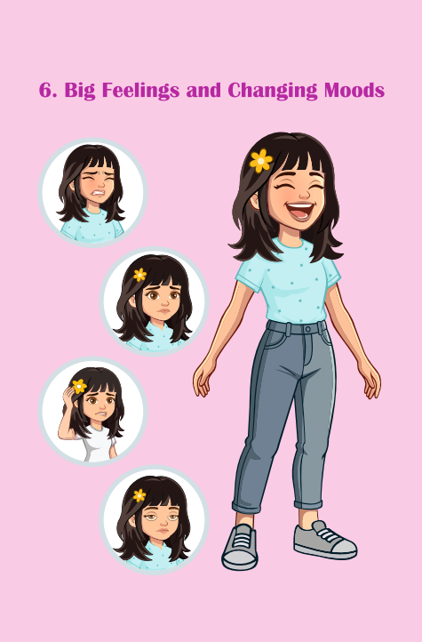
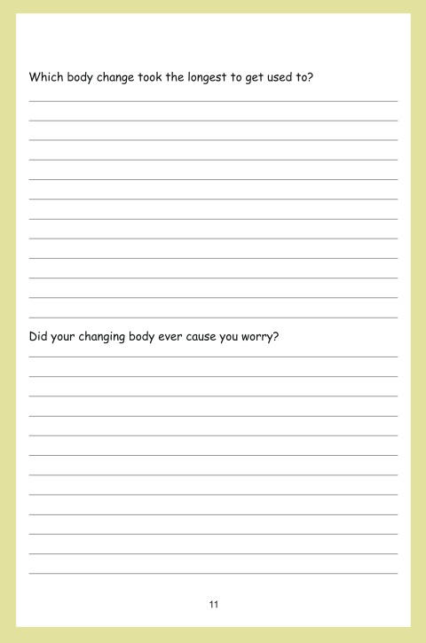
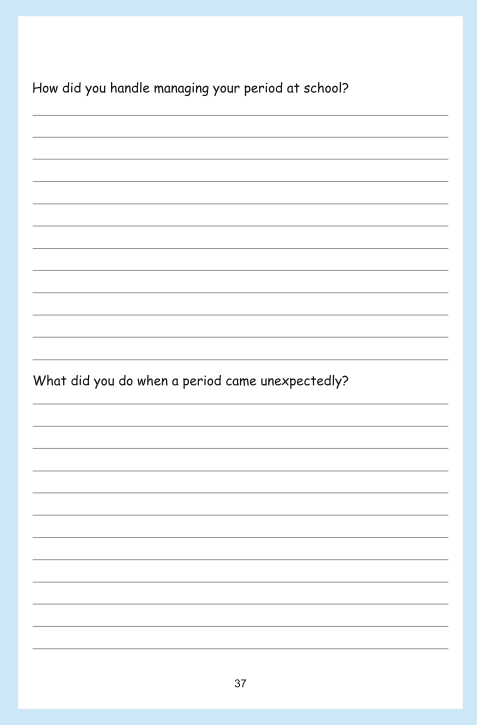
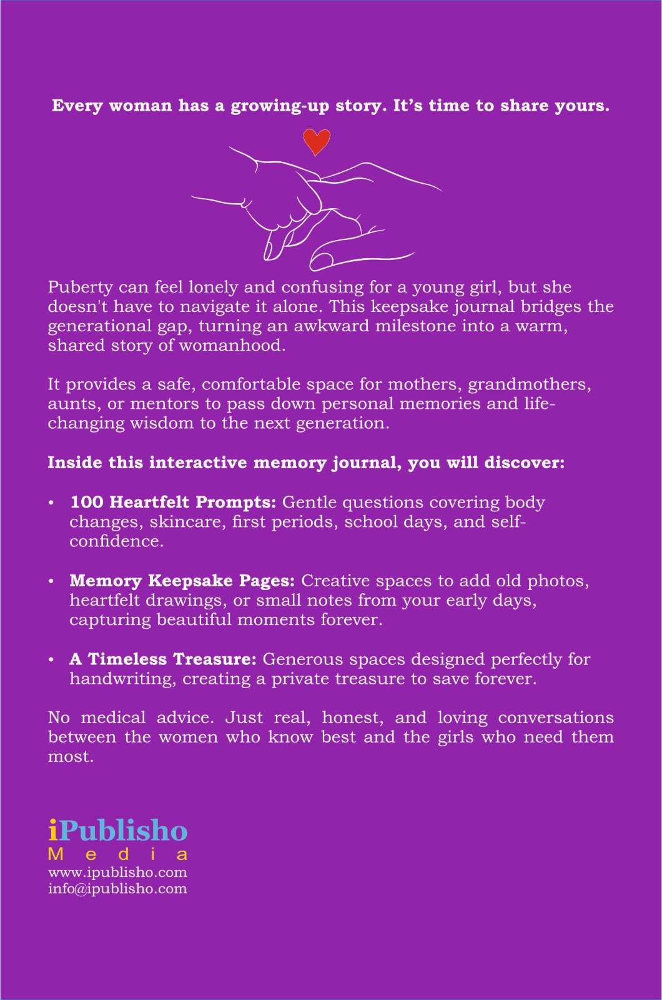

The Teen Starts the Journey
The teen girl hands this journal to her mother, aunt, or trusted mentor to ask 100 heartfelt questions about growing up.
A shared journal for growing up
100 Heartfelt Prompts to Share Memories, Talk About Body Changes, and Build Confidence
Growing up can feel very lonely. As a young girl watches her body change, she faces confusion and big emotional shifts. She has so many deep questions inside, but she doesn't know how to ask them.
This journal gives her a safe way to ask those questions. By handing it to the mentors she trusts more than anyone else—like her mother, grandmother, or aunt—she can collect their real stories, easing fear and building lasting confidence.

A simple way to start the conversation
The teen girl hands this journal to her mother, aunt, or trusted mentor to ask 100 heartfelt questions about growing up.
The mentor answers the prompts using her own historical personal memories, filling the pages with real-life guidance.
The completed journal is handed back to the teen girl, giving her a priceless personal guide so she never feels alone.
Shopping Note: If age restrictions prevent teens from purchasing directly on Amazon, mentors can secure the journal first and pass it to the teen to initiate the prompt exchange!
Made to be written, shared, and treasured
A safe, comfortable space for mothers, grandmothers, aunts, or mentors to pass down life-changing wisdom.
Safety Note: No medical advice. Just real, honest, and loving conversations between the women who know best and the girls who need them most.
A preview of the pages inside




Preview of the 100 Heartfelt Prompts and interior layouts. Tap the button below to see the full book on Amazon!
Make room for a TRUSTED conversation
Give her a guide she will cherish forever.